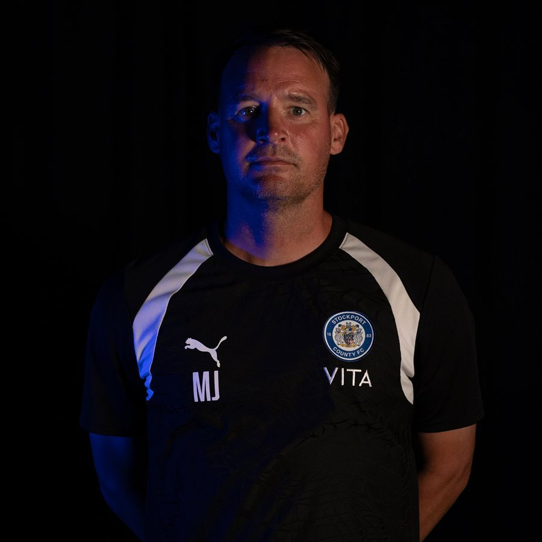

球员联络官
马特·詹森
Matt Jansen
帽匠一线队支持团队成员，参与球员支持，并在官方团队页面列有终结训练教练职责。
中文资料更新于2026-11-14。历史统计对应所述赛季或公告日期，不代表实时累计数据。
一线队支持团队
球员支持
详细介绍
官方名单中的身份
马特·詹森在俱乐部阵容数据中列为球员联络官，职业团队页面则将其列为一线队终结训练教练。两处官方资料的职务表述不同，因此本页保留说明，不将其强行合并为单一头衔。
岗位介绍
球员联络侧重日常沟通与支持，终结训练则关注射门和门前处理等专项内容。两类工作都服务于球员表现，但具体个人分工仍以俱乐部后续公布为准。
- 目前职务 / 位置
- 球员联络官
生涯时间线
- 官方名单中的身份
马特·詹森在俱乐部阵容数据中列为球员联络官，职业团队页面则将其列为一线队终结训练教练。两处官方资料的职务表述不同，因此本页保留说明，不将其强行合并为单一头衔。
- 岗位介绍
球员联络侧重日常沟通与支持，终结训练则关注射门和门前处理等专项内容。两类工作都服务于球员表现，但具体个人分工仍以俱乐部后续公布为准。
- 2026/27赛季
斯托克波特郡球员联络官。